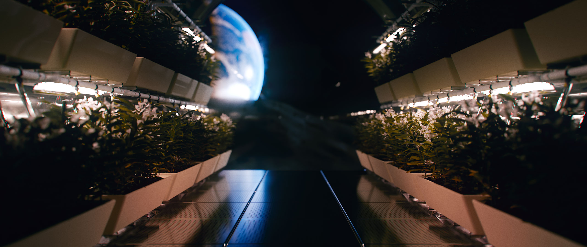
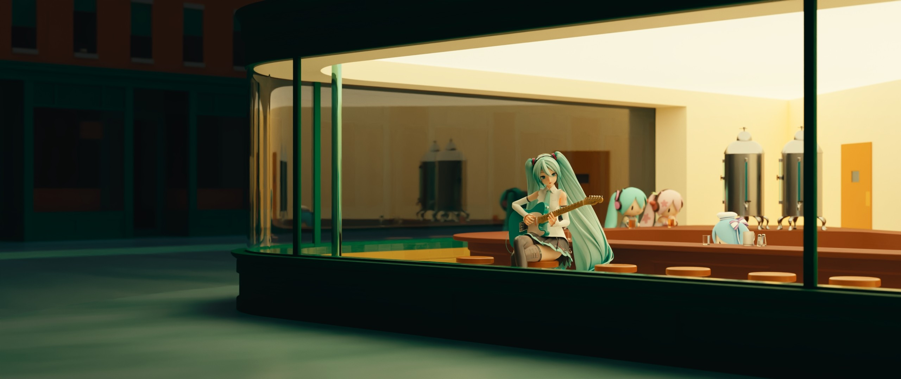

欢迎来到 SableFiSh! 我使用 Blender 创建动画。在这里, 你可以找到我的视频, 场景下载以及一些关于制作技术的文章。



本页面所使用的素材及其权利归属说明如下：地球模型来源于 @samk9632;《BanG Dream! It's MyGO!!!!!》立牌图片来源于官方设定集，其著作权等权利归株式会社 Bushiroad 所有; YYB 式初音模型来源于三目YYB; fufu 模型来源于 @sdyan2; 部分场景素材来源于 Quixel Megascans。除另有说明外,以上素材之相关权利均归各权利人所有。